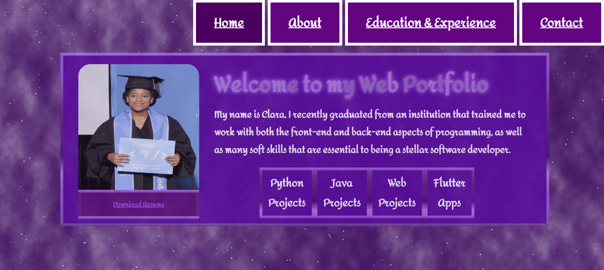

Personal Portfolio Website

Description:
This project is my portfolio website! Created after completing a System Development course, this project highlights my technical skills and proficiency.
Key Features:
Responsive Design: Ensured optimal viewing across all devices.
UI/UX: Developed a clean, intuitive interface using HTML, CSS, and JavaScript, focusing on user experience and aesthetics.
Dynamic Content: Utilized JavaScript to render content dynamically, enhancing engagement and showcasing my front-end skills.
Styling with CSS: Applied CSS for layout, styling, and animations, demonstrating expertise in modern web design.
Code Organization: Structured code for readability and maintainability, following best web development practices.
Technologies Used:
- HTML
- CSS
- JavaScript
- Git for version control
- Visual Studio Code as my IDE
Challenges and Learnings:
Faced challenges like cross-browser compatibility and performance optimization, leading to valuable insights in troubleshooting and web development best practices.
Future Iterations:
I plan to expand this portfolio with new projects and refine existing features, potentially integrating advanced JavaScript functionalities to enhance user interaction.